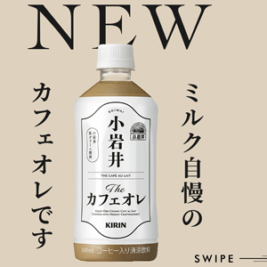
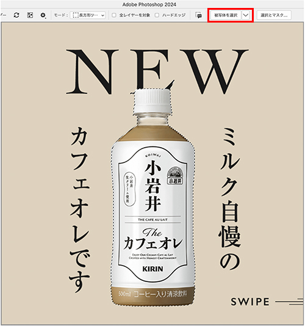
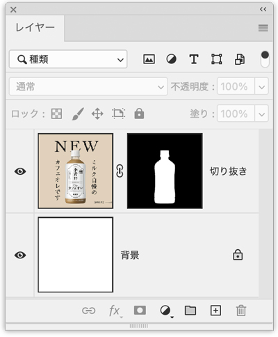
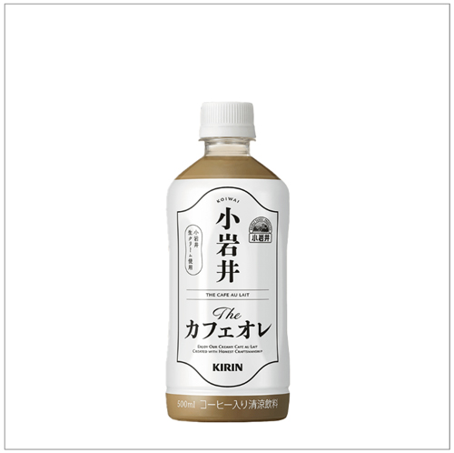
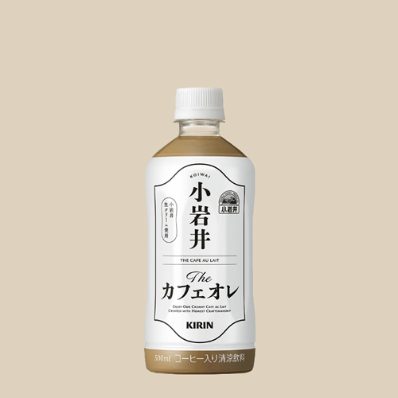
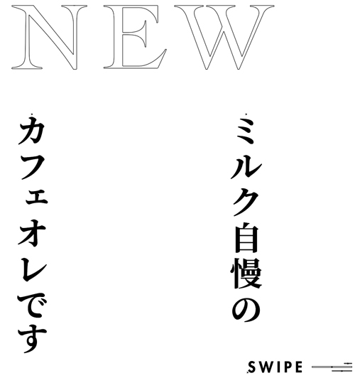
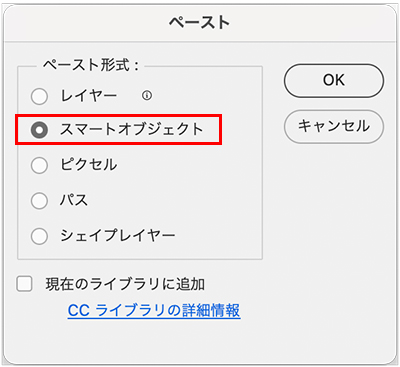
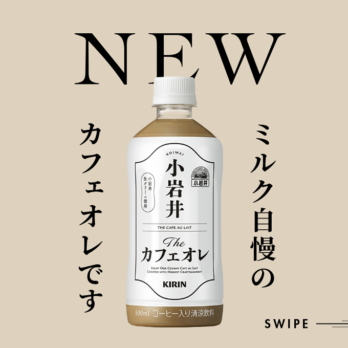

小岩井カフェオレ

- 初心者向きのシンプルなバナー広告のトレース
切り抜き写真
- 「オブジェクト選択ツール」で、オプションバーの「被写体を選択」ボタンをクリック
- 自動的に選択範囲が作られます

レイヤーマスクを追加


背景を塗りつぶし
- 元画像からスポイトツールで色を抽出すると「描画色」になります
- 「描画色で塗りつぶし」は、「Alt」キー + Delete

文字のトレースと入力
- 「NEW」の部分は、Illustratorでトレース（適した文字があればそれで指定）
- 縦書きの文字は、Google Font「Noto Serif JP Bold」を指定
- 「SWIPE」の文字は、「Futura Std Heavy」を指定

コーピー＆ペースト
- アドビ・クリップボード経由で、「スマートオブジェクト」として配置
- Illustratorの文字をコピー
- Photoshop上でペースト
※ペースト時のオプションに注意！

スマートオブジェクト
- 配置された画像が「インスタンス」
- 配置レイヤーの「サムネイル」をダブルクリックして開く「Illustratorのデータ」を「オブジェクト」と呼びます
- 配置データは、仮の配置位置のみを記憶しているデータなので、元データの画質が変わらないため「拡大・縮小」をしても最終的な画質は変化しません
位置を調整
- 見本に合わせて位置を調整して完成
